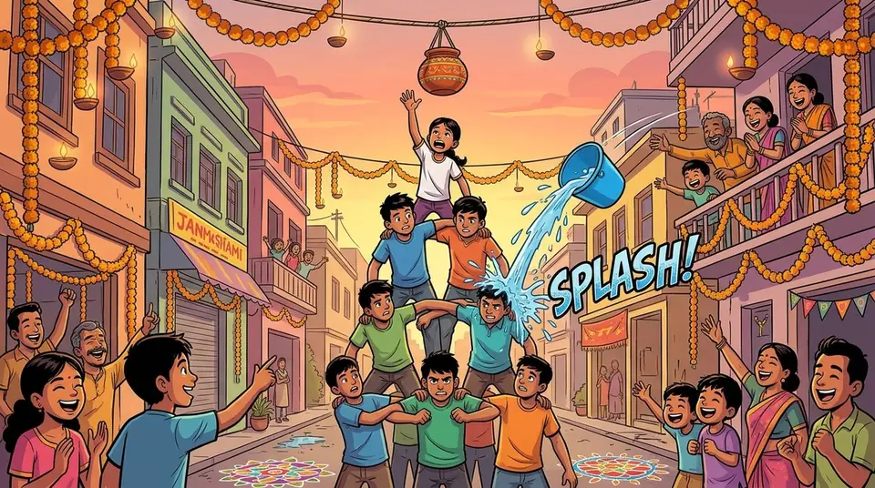

Dahi HandiTenez votre étage, cassez le pot

Un jeu coopératif inspiré du Dahi Handi, la fête indienne où des équipes montent en pyramide humaine pour casser un pot suspendu. Chaque joueur tient un étage : la bille de votre niveau à bulle glisse toute seule d'un côté, ramenez-la au milieu avec les boutons gauche et droite. Tant que tous les étages sont droits, le petit grimpeur monte. S'il atteint le sommet, il casse le pot et l'équipe marque. Si un seul étage penche trop, toute la pyramide s'écroule et il faut recommencer. La foule vous jette de l'eau, le vent souffle par rafales, et chaque pot cassé rend le suivant plus difficile. Les étages libres sont tenus par des robots.
Jouer à Dahi HandiLes commandes
- Sur téléphone : Maintenez le bouton ◀ ou ▶ pour ramener la bille de votre niveau au milieu. Lâchez dès qu'elle y est.
- Sur ordinateur : ← → ou Q D.
En vidéo
L'astuce
Votre étage est entouré de pointillés blancs. Il penche tout seul, et encore plus quand l'étage du dessous penche ou quand le grimpeur passe sur vous. Gare aux seaux d'eau de la foule, et quand le vent est annoncé, poussez contre lui !
Comment jouer à plusieurs
Ouvrez Baston Arcade, choisissez « Jouer à plusieurs » puis « Créer un salon ». Vos amis scannent le QR code ou tapent le code du salon sur leur téléphone. Pas de compte, pas d'application à installer, pas de publicité. Seul, vous jouez contre des robots.